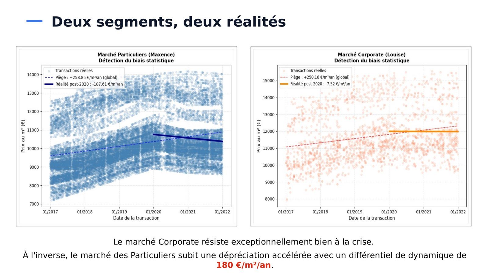
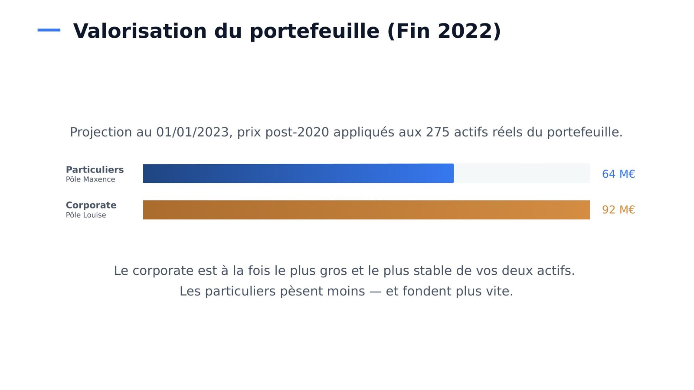

Les Plus Beaux Logis de Paris, prédire et classer pour décider vite
Projet 8 du parcours. Python, pandas, scikit-learn, régression linéaire, K-Means.
Contexte et besoin métier
Les Plus Beaux Logis de Paris, entreprise familiale d’achat-revente immobilière, devait dégager rapidement de la trésorerie en cédant une partie de son portefeuille, sans savoir lequel de ses deux segments, particuliers ou corporate, sacrifier. Dans un second temps, la directrice du pôle corporate voulait classer automatiquement les opportunités d’achat entre logements et locaux commerciaux, une qualification que ses conseillers faisaient jusque-là par téléphone.
Données
L’historique des transactions immobilières parisiennes de 2017 à 2021, le portefeuille de 275 actifs de l’entreprise, puis un échantillon de 40 biens à classer, transmis par l’équipe corporate.
Démarche
J’ai d’abord analysé l’évolution des prix par segment, puis entraîné une régression linéaire pour projeter la valeur du portefeuille. L’analyse a révélé un piège : sur l’ensemble de la période, le modèle calculait une hausse d’environ 250 €/m² par an, alors que les prix reculaient depuis 2020. J’ai donc fondé la projection sur la seule période récente.
Pour la classification, j’ai créé un ratio rapportant le prix de chaque bien à la moyenne de son arrondissement, afin de neutraliser l’effet quartier, avant d’appliquer un algorithme de segmentation K-Means, dont le nombre de groupes a été choisi par le score de silhouette.

Résultats et impact
Le portefeuille corporate, valorisé à 92 M€, résiste nettement mieux que celui des particuliers, estimé à 64 M€ et en baisse plus rapide, ce qui a conduit à recommander de céder une partie des actifs particuliers. Le modèle de classification distingue logements et locaux commerciaux avec 99,9 % de concordance sur 5 068 transactions, et il a trié les 40 biens de l’échantillon en moins d’une seconde, là où il fallait des dizaines d’appels.

Limites et prochaines pistes
La prévision repose sur une tendance linéaire, avec une marge d’erreur d’environ 10 %, et la classification sur deux seules variables, la surface et le ratio de prix. Ajouter d’autres caractéristiques des biens et tester le modèle sur d’autres arrondissements que le 19e permettrait de le fiabiliser.